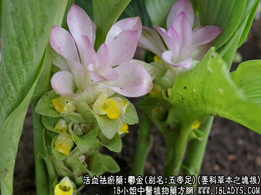
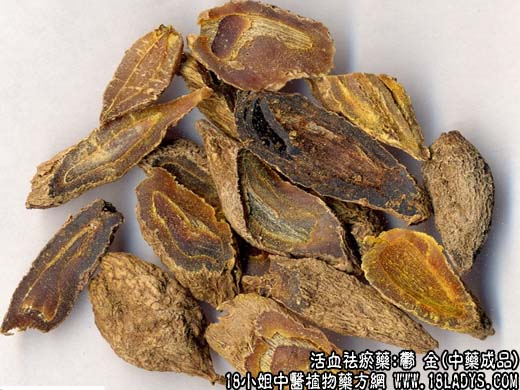

【中药概述】
郁金，别名：五帝足、黄郁、乌头、马蒁、黄郁，为姜科草本植物郁金的块根。辛、苦，寒。归心、肝、胆经。
1．活血止痛：用于血瘀气滞的胸腹胁肋胀痛，肝气郁结，经行腹痛，月经不调，腹中结块等症，如（宣郁通经汤）。
2．用于湿温病神志不清，浊邪蔽阻清窍，以及癫痫等症，如（白金丸、菖蒲郁金汤）。
3．凉血清心：用于血热的吐血、衄血、尿血。配生地，丹皮，山栀等凉血药，可起到祛瘀生新、凉血止血、而又不致留瘀的作用。
4．退黄：用于利胆、退黄，可用治黄疸，常与茵陈，栀子，枳壳，青皮，芒硝等同用。
【药物形态】
温郁金呈长圆形或卵圆形，稍扁，有的微弯曲，两端渐尖，长3.5～7cm，直径1.2～2.5cm。表面灰褐色或灰棕色，具不规则的纵皱纹，纵纹隆起处色较浅。质坚实，断面灰棕色，角质样；内皮层环明显。气微香，味微苦。黄丝郁金 呈纺锤形，有的一端细长，长2.5～4.5cm，直径1～1.5cm。表面棕灰色或灰黄色，具细皱纹。断面橙黄色，外周棕黄色至棕红色。气芳香，味辛辣。桂郁金 呈长圆锥形或长圆形，长2～6.5cm，直径1～1.8cm。表面具疏浅纵纹或较粗糙网状皱纹。气微，味微辛苦。
【药效鉴别】本品为调逆气，行瘀血之要药。既能活血化瘀，又善行气解郁，可通月经，消症瘕，尤长于止胸腹胁肋气滞血瘀诸痛。
【临证应用】治自汗：用郁金30g，五倍子9g，研末每次用10g左右，加适量蜂蜜调成饼2块贴两乳头上，用布包固，每日换药2次。
【药理作用】1.挥发油有促进胆汁分泌作用。2.对多种皮肤致病真菌有抑制作用。
【化学成分】含挥发油，油中有姜黄烯、倍半萜烯醇、樟脑等。
【用量用法】6——12g，水煎服，或入剂。外用适量。
【使用注意】本品畏丁香（丁香莫与郁金见）。
【附】醋郁金：能引药入血分，有增强疏肝止痛之效，善治郁血心痛。
本文解释权归收纳中草药图谱的中药大全所有，本文地址：https://www.daquan.com/post/1998.html